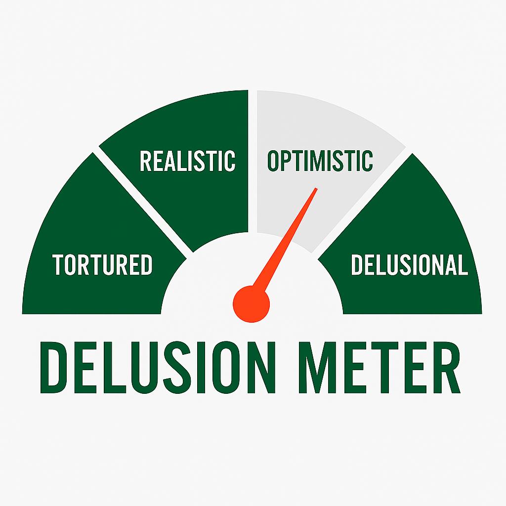

The Delusional Jets Fan
Refreshed Weekly. Current Offseason Delusion Level Below:

Last updated: May 14, 2025
no team has spent more draft capital on offense the last 5 years than the New York Jets
— Warren Sharp (@SharpFootball) April 7, 2025
it hasn't been particularly close
yet their offense is still terrible
who should they target in the draft?
deep Jets roster analysis and positional needs to address:… pic.twitter.com/xFoPNOXQ4C
New York Jets Super Bowl Odds
— Pickswise (@Pickswise) March 10, 2025
Before Signing Justin Fields:
+15000
After Signing Justin Fields:
+15000
(via @DKSportsbook) pic.twitter.com/6DAzh963Rs
Everything #nyjets is the opposite of what we’re used to seeing right about now
— GreenBean (@beanthejetsfan) March 15, 2025
1. Letting older “legend” types walk
2. Cleaning up the cap for future
3. Not being sucked into big name hunting in FA
4. Focus on getting younger
5. Attempting a young Qb reclamation (instead of…
“If Adam Gase doesn’t win he’s gone” and “Darnold is the most talented QB in the division” 🔥
— TheJetSpace💭 (@TheJetSpace1) May 13, 2020
I hear no lies from Colin here.. #Jets pic.twitter.com/00ymAdLGBl
Dalvin Cook signs with the New York Jets!
— Stuart Feiner (@StuartFeiner) August 15, 2023
THE NEW YORK JETS ARE WINNING THE SUPER BOWL! #TakeFlight pic.twitter.com/Kurn8sdUSo
Comments